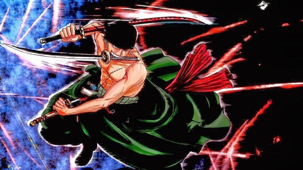

Thong tin ve One Piece

Roronoa Zoro
Roronoa Zoro[7] (ロロノア・ゾロ? Roronoa Zoro) biệt danh "Thợ săn hải tặc".Xuất thân từ một "Thợ săn Hải Tặc", Roronoa Zoro là thành viên đầu tiên của băng hải tặc Mũ rơm. Là kiếm sĩ cũng như là bậc thầy kiếm thuật duy nhất trong nhóm, sử dụng thành thục 3 thanh kiếm cùng lúc (Tam kiếm phái) và được biết hiện tại anh có thể sử dụng hai loại Haki. Đồng thời là một trong những thành viên mạnh nhất trong nhóm.
Tuổi thơ
Roronoa Zoro sinh ngày 11 tháng 11 ở Làng Shimotsuki thuộc vùng biển Đông. Zoro được Eiichiro Oda khắc họa là một đứa trẻ nghịch ngợm nhưng rất thích kiếm thuật. Một ngày nọ Zoro đến một võ đường và đòi tháo bảng hiệu của võ đường nếu cậu đánh thắng được người giỏi nhất ở đây. Ở đây, cậu đấu với Kuina. Zoro đã thua và rèn luyện chăm chỉ với quyết tâm có một ngày đánh thắng được Kuina. Một ngày, Kuina đã giải thích với cậu rằng con gái khi lớn lên thì sức mạnh sẽ giảm sút, cô ấy sẽ không thể nào trở thành kiếm sĩ giỏi nhất thế giới được. Zoro và Kuina hứa với nhau sẽ cùng nhau trở thành kiếm sĩ giỏi nhất và nhì của thế giới. Ngày hôm sau, được tin Kuina đã chết vì trượt chân ở cầu thang, Zoro đã khóc và thề với lòng mình là sẽ cho Kuina thấy cậu trở thành kiếm sĩ giỏi nhất thế giới.
Tính cách
Zoro (19 tuổi) là một thành viên hết lòng vì bạn bè của mình, thích ngủ (có thể ngủ trong bất kỳ điều kiện nào dù động đất hay giông bão), thích uống rượu, không hợp tính và thường gây gổ với Sanji, mắc chứng mù hướng. Zoro nổi tiếng vì phái tam kiếm, hai cây trên tay và một cây ở miệng, khi chiến đấu, anh thường lấy một mảnh vải băng quanh đầu vì điều đó làm cho anh cảm thấy tự tin hơn. Các chiêu thức của Zoro có sức công phá lớn như Tam Thập Lục Phiền Não Phụng, 108 Phiền Não Phụng, quỷ kiếm. Anh thu nhập được thanh kiếm Thu Thủy nổi tiếng, và giúp đỡ Luffy rất nhiều trên đường cùng nhau chinh phục ước mơ.
Năng lực và sức mạnh
Không thể bàn cãi được sức mạnh khủng khiếp của 1 thanh niên còn trẻ tuổi như Zoro, một trong 3 thành viên mạnh nhất trong nhóm Hải Tặc Mũ Rơm. Vì sức mạnh của cậu quá lớn và kinh hoàng nên đôi khi cậu trở nên nghiêm nghị và lạnh lùng trong cách ứng xử bên ngoài (đối với những người không hiểu rõ cậu), người ta thường nhầm lẫn cậu là thuyền trưởng của nhóm Hải Tặc Mũ Rơm sau khi chứng kiến sức mạnh của cậu trong các trận chiến. Trong khi Luffy luôn đương đầu với đối thủ mạnh nhất, thì Zoro là người xử đối thủ mạnh thứ hai.
Sau 2 năm dưới sự giám sát và huấn luyện của Thất Vũ Hải Dracule Mihawk (Mắt Diều Hâu), Zoro giờ đây đã trở nên mạnh hơn gấp nhiều lần. Điều này được chứng minh qua lần đầu xuất hiện của cậu sau 2 năm, khi cậu dễ dàng chém đôi 1 chiếc thuyền lớn với 1 tốc độ siêu nhanh và chuẩn xác mà không cần tốn quá nhiều sức (và cậu nhắm chuẩn xác không cần con mắt trái của mình) chỉ với 1 nhát mà thôi. Zoro cũng có thể chém đôi 1 tên người máy Pacifista chỉ với 1 vết chém, việc mà 2 năm trước là không thể (khi đó cậu chỉ làm hại nhẹ lên người tên người máy mà thôi).
Sức mạnh của Zoro sau 2 năm được chứng minh thêm 1 lần nữa khi cậu đã được thay đổi mô-típ luôn chiến đấu với kẻ thù mạnh thứ 2 khi cậu dễ dàng hạ gục tên Hody Jones, kẻ được coi là mạnh nhất trong chương Đảo Nhân Ngư, sau này hắn đấu lại với Luffy. Cậu hạ hắn dễ dàng chỉ với 1 thanh kiếm trong tay, mặc dù phải chịu nhiều bất lợi khi chiến đấu dưới nước khi chống lại người cá.
Ngay cả khi không có kiếm trong tay, Zoro vẫn có 1 sức khoẻ và thể lực rất tốt. Khi còn rất nhỏ, cậu cỏ thể nâng 1 tảng đá lớn lên qua đầu, và bây giờ có thể nâng cả toà nhà và ném nó đi xa. Cậu cũng có thể dùng những chiêu thức kiếm thuật dù trong tay không có kiếm, và nó được cho thấy là 1 cú đấm rất mạnh, đầy uy lực, và rất sắc bén. Cậu cũng đủ mạnh để đỡ và hất dăng cú đấm của Oars.
Tuy nhiên, có vẻ như Zoro không thể điều hoà toàn sức mạnh của mình vào 2 năm trước. Điều này cho thấy khi anh chiến đấu với nhóm thợ đóng thuyền từ công ty Galley-La, cậu chỉ có thể sử dụng một phần sống kiếm để chiến đấu, dù vẫn gây ra 1 thiệt hại nghiêm trọng.
Sau 2 năm, Zoro đã tăng cường thể lực cơ thể một cách xuất sắc, khi khoá được chiêu thức từ cây Đinh ba vàng khổng lồ từ vua Neptune một cách dễ dàng.
Độ nhuần nhuyễn, dẻo dai và tốc độ của Zoro cũng là 1 điều đáng nói. Cậu chứng minh qua việc giữ được phong độ nhanh nhẹn ngang với Sanji (Sanji được đánh giá cao về tốt độ nhất trong nhóm Mũ Rơm), hay ngang với chiêu thức di chuyển Soru của Kaku, thành viên của CP9. Cậu di chuyển đôi khi dưới 1 tốc độ phi thường, nhảy từ 1 điểm cực cao hay né 1 viên đạn một cách dễ dàng. Nhiều lúc, cậu cũng có thể chặn được những chiêu thức cực nhanh (có tốc độ kinh hoàng) mà ngươì thường không thể nhận biết được. Còn nữa, Zoro có thể né được những dòng tia phóng xạ hay các cú hút áp lực công phá của Thất Vũ Hải Bartholomew Kuma, cả hai chiêu thức này đề di chuyển dưới vận tốc cực đại, mặc dù cơ thể đã bị thương nặng sau trận chiến với ma nhân khổng lồ Oars và hao sức sau trận chiến với Ryuma.
2 năm sau, tốc độ của Zoro dưới nước được cho thấy nhanh hơn cả người cá. Điều này được 1 tên lính thuộc nhóm Hải Tặc Tân Nhân Ngư (New Fishmen Pirates) cho biết, đây là 1 tốc độ không tưởng, nhanh hơn cả 1 người cá khi chiến đấu dưới nước.
Để có được sức mạnh này, Zoro đã phải có sức chịu đựng vượt bậc, qua gấp giới hạn của một con người bình thường rất rất nhiều lần, trải qua biết bao thương tích, trong mọi trường hợp khác nhau, liên tiếp xảy ra, như những ví dụ điển hình sau đây:
Để có được sức mạnh này, Zoro đã phải có sức chịu đựng vượt bậc, qua gấp giới hạn của một con người bình thường rất rất nhiều lần, trải qua biết bao thương tích, trong mọi trường hợp khác nhau, liên tiếp xảy ra, như những ví dụ điển hình sau đây:
Thất Vũ Hải Mihawk chém ngay ngực của cậu bằng cây Hắc Kiếm (Black Sword) Lỗ mũi răng cưa của Arlong đâm vào ngực của cậu Tự đâm vào chân mình để giải thoát bản thân khỏi dàn trận bằng sáp của Mr.3 (Baroque Work) Hai đường dao nhọn sắc của Mr. 1 cứa vào ngực cậu Cú giáng sấm chớp cực mạnh của Enel Những đòn đánh Rankyaku liên hồi của Kaku Hứng cú đá trực diện của ma nhân Oars Đòn Phá Nổ (Ursus Shock) của Thất Vũ Hải Kuma. Điều đáng bàn hơn là dù đã trải qua những đòn đánh hiểm ác trên, Zoro vẫn luôn là người còn giữ được sự tỉnh táo của mình mà đứng lên chặn lấy Kuma, dù sau đó Sanji cũng là người thứ 2 tỉnh lại. “Làm sao mà cái tên đó vẫn có thể đứng vững sau khi lãnh nhận 1 đòn kinh hoàng của tên khổng lồ kia chứ? Thật sự là mình chả biết ai mới thực sự là ma nhân nữa!”
Thất Vũ Hải Mihawk chém ngay ngực của cậu bằng cây Hắc Kiếm (Black Sword) Lỗ mũi răng cưa của Arlong đâm vào ngực của cậu Tự đâm vào chân mình để giải thoát bản thân khỏi dàn trận bằng sáp của Mr.3 (Baroque Work) Hai đường dao nhọn sắc của Mr. 1 cứa vào ngực cậu Cú giáng sấm chớp cực mạnh của Enel Những đòn đánh Rankyaku liên hồi của Kaku Hứng cú đá trực diện của ma nhân Oars Đòn Phá Nổ (Ursus Shock) của Thất Vũ Hải Kuma. Điều đáng bàn hơn là dù đã trải qua những đòn đánh hiểm ác trên, Zoro vẫn luôn là người còn giữ được sự tỉnh táo của mình mà đứng lên chặn lấy Kuma, dù sau đó Sanji cũng là người thứ 2 tỉnh lại. “Làm sao mà cái tên đó vẫn có thể đứng vững sau khi lãnh nhận 1 đòn kinh hoàng của tên khổng lồ kia chứ? Thật sự là mình chả biết ai mới thực sự là ma nhân nữa!”
Cuối cùng là việc Zoro chịu nhận lấy mọi đau đớn và tổn thương trong cơ thể của Luffy vào cơ thể mình, mặc dù người cậu đã mang sẵn trong người những chấn thương nghiêm trọng từ trận chiến với Ryuma và Oars. Điều này đủ khiến Kuma cảm thấy ấn tượng khiến ông ta cũng phải thốt lên với sức chịu đựng của cậu, mặc dù cậu đã kề cận với cái chết, cậu vẫn nhận lấy những chấn thương của Luffy, dù biết nó có thể giết chết cậu. Zoro, tuy nhiên, vẫn sống sót vượt qua, và nói rằng chả có gì xảy ra cả khi Sanji hỏi. Chi tiết đáng lưu ý nữa là trong khi Luffy bất tỉnh sau khi hạ gục Moria do sự vận động mạnh liên hồi và kiệt sức của mình, còn Zoro, mặt khác, không chỉ sống sót, giữ trạng thái tỉnh táo và chịu lấy hết những thương tích của cả cậu và Luffy.
Sức chịu đựng phi thường, hơn cả một con quái vật.
Như đã nói phía trên, cậu đã vượt qua rất nhiều vết thương có thể giết chết bất kỳ người thường nào khác, cho thấy sức chịu đựng và độ bền tuyệt hảo của cậu, và phần lớn các trận chiến mà cậu dấn thân vào đều để lại 1 vũng máu trên người cậu hay những vết thương sinh tử. Dù có trong tình trạng sắp chết, cậu vẫn cứ thế mà tiến lên, chiến đấu, không hề chùn bước, nhiều khi còn phát triển kỹ năng của mình lên 1 mức cao hơn nữa, với một cái đầu tỉnh. Những gì đã được mô tả là một trong những tính chất chịu đựng cao và ghê gớm nhất trong thế giới truyện One Piece, đặc biệt là đối với 1 người thường, không mang năng lực quả Ác Quỷ, chứng tỏ cậu là người có sức chịu đựng lớn nhất trong nhóm, dù rằng cậu giờ không còn được coi là 1 người thường nữa.
Khuyết điểm
Thiếu Định Hướng Trầm Trọng – "Trùm" Lạc Đường: Ngoài những trận chiến nảy lửa, uy hùng, Zoro có 1 khuyết điểm hiển nhiên ai trong nhóm cũng biết, đó chính là việc không thể định hướng (dễ lạc đường). Khi cậu luôn là người dễ dàng đi lạc bất kỳ ở đâu hoặc là đi khác hướng so với các thành viên còn lại. Zoro vẫn đi sai hướng cho dù đã được chỉ dẫn một cách rõ ràng và cụ thể. Zoro đôi khi cũng tự cảm thấy rối trong việc định hướng đi riêng của mình. Như ở Chương Thiên Đảo Skypiea, khi cậu dự định đi về hướng phải, nhưng cậu lại cứ rẽ trái. Cũng thế ở Chương Đại Sảnh Ennnis, Nami chỉ và nói rằng 1 mọi người hãy đi và tập trung về hướng đó nhưng Zoro lại vẫn cứ đi theo 1 hướng hoàn toàn khác. Điều này khiến các thành viên trong nhóm rất lo cho cậu, đôi khi nói khi hay chọc và nói móc cậu (đặc biệt là Luffy). Tuy nhiên, Zoro lại không nhận ra được vấn để này của mình nên cậu thường đổ lỗi và cho rằng các thành viên trong nhóm luôn đi lạc. Sau 2 năm, Zoro là thành viên đầu tiên trở lại Quần đảo Sabaody, điều này đã khiến Sanji cực sốc. Tuy nhiên, việc này đều là nhờ công sức của Perona. Ngoài ra cậu cũng có thể dễ dàng bị đi lạc cho dù chạy trên đường thẳng.
Kiếm pháp
A.Tam kiếm phái: Santoryu
B. Nhị kiếm phái: Nitoryu
C. Đơn kiếm phái: Ittoryu
D. Vô Thuật Kiếm Pháp: Mutoryu
E. Ảo Giác Kiếm Xuất - Vương Sát Asura
Trong trận chiến với Kaku, Zoro đã cho thấy 1 phương thức mới mang tên là "Asura" chiêu thức này khiến cậu có hình dáng 3 đầu, 6 tay, giống như 1 vị thần cùng tên. Cậu cũng được bao quanh bởi 1 nguồn lực bóng tối (âm địa) và lần đầu khi cậu thành công trong việc sử dụng nó mặt đây đã chấn động liên tục và gây ra nhiều lỗ hỗng trên mặt đất. Khả năng này cũng biến hoá Zoro từ thuật Tam kiếm, nhân 3 lên thành Cửu Kiếm, và chiêu thức này thường dùng để kết thúc những đối thủ mạnh. Khả năng này vẫn chưa hiểu do đâu mà Zoro có được, và động cơ uy lực của chiêu thức này xuất phát từ đâu trong không trung cũng vẫn chưa được giải thích (đúng với những năng lượng âm địa bao quanh Zoro, đây có lẽ đây là sức mạnh đến từ bọn quỷ dữ, nhưng theo Kalu cho rằng đây chỉ là ảo ảnh mà tinh thần cường tráng của Zoro tạo ra mà thôi.
Kyutoryu - Cữu Kiếm
*Giới thiệu:
Kyutoryu (tạm dịch "Phái Cữu Kiếm") là 1 dạng phái bổ sung đầy hữu ít cho Phái Tam Kiếm - Santoryu của Zoro. Chúng được tạo ra từ những ảo ảnh và áp khí tinh thần của cậu bộc phát và Phái Cữu Kiếm - Kyutoryu này tương đương 3 lần công lực của 3 kiếm sỹ và nó có thể phá giải được chiêu thức mạnh nhất của Kaku - Rankyaku. Phương thức này được chính thức kích hoạt khi Zoro trong trạng thái Quỷ Pháp Kiếm Thuật - Asura, tạo ra ảo ảnh của chín thanh kiếm xung quanh. Vẫn chưa hiểu hết rõ nguyên lý xuất phát và nó ra sao rõ rang, cậu chỉ mới sử dụng để chiến đấu với Kaku, Indigo, và 1 tên người máy Pacifista.
Kiki Kyutoryu: Asura (tạm dịch "Ma Hồn Cữu Thuật Kiếm Pháp: Quỷ Vương - Asura"): Sau 1 hồi bị tấn công liên tục và nghe những lời xúc phạm Robin (trong phim), cơn giận dữ và sự phẫn nộ của Zoro tự hiện ra thấy rõ trong 1 linh khí sát sinh và thâm tối, được biết tương tự như một con quỷ Asura. Trong phim, chu vi xung quanh cũng biến thành 1 màu đen khi Zoro bắt đầu kích hoạt chiêu thức này từ điểm Zoro đứng và hất bay ngọn gió khi từ chiêu thức Kaku tạo ra. Lần đầu cậu dùng là 1 hình thái chuyển hoá chưa hoản chỉnh do sự không ổn định trong tâm trạng nên chỉ hình thành được 1 linh khí đen với 6 cánh tay, đây là những đặc điểm có thể thấy rõ lúc đó, nhưng trong lần thứ 2 sử dụng, cậu đã hoàn toàn điều khiển được nó và phiên bản này y hệt với giờ đây. Lần đầu dùng để đối đầu với Kaku. Chiêu thức này đả phá giải thành công chiêu thức Rankyaku Amanedachi của Kaku và phản công lại với thêm 1 chiêu thứ kết liễu, vì bản chất thật của chiêu thức này của cậu vẫn chưa được khám phá hết. "Ashura" là cách đọc trong tiếng Nhật cho từ Asura.
Asura: Ichibugin (tạm dịch "Vương Sát Asura: Sương Đêm Bạc"): đây là chiêu thức đầy tiên của cậu sử dụng với trường phái kiếm thuật này, cầm kiếm với đầu thanh kiếm chỉa hướng về đối thủ, Zoro sau đó đâm thẳng vào đối thủ, chém đối thủ 9 nhát rất mạnh cùng 1 lúc, nhìn như 1 cây quạt xoay, chém đối thủ. Đây là chiêu thức kết liễu Kaku
Asura: Makyusen (tạm dịch "Vương Sát Asura: Đại Cữu Nháp Quỷ"): Zoro tiến thẳng về đối thủ và chém 1 phát chín nhát, trong khi chạy đòn, cácg thanh kiếm tạo hình dáng như 1 vòng bánh xe sắc nhọn từ khoảng cách xa, vết thương để lại cũng rất đặc biệt, nó tương tự như chiêu thức điển hình của Brook, đó là vài phút sau kết cục của đối thủ mới được thấy rõ. Lần đầu dùng với tên người máy PX-4.
Asura: Ugui (tạ dịch "Sát Vương Asura: Đại Lực Công Khoang"): Zoro vừa tiến tới đối thủ vừa xoáy chém xoay vòng, như 1 mũi khoang tiến thẳng, và kết thúc như chiêu Makyūsen (tạm dịch "Vương Sát Asura: Đại Cữu Nháp Quỷ"). Chiêu thức này dùng với tên Indigo sau khi Zoro chặn được chiêu trò hoá chất tung hứng của gã và tất thanh kiếm đều được phủ 1 lớp hoá học nêu trên, tương tự như chiêu thức Yaki Oni Giri (tạm dịch “Quỷ Trảm Gào Lửa – Đàm Ly Phất”), tronh phim Strong World.